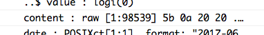

We all know the feeling; You find the perfect data set only to discover it’s held hostage in 30 pages of a PDF formatted by a drunk toddler or in 467.5 Excel worksheets spread across 19 workbooks emailed to you by a guy named Melvin. If you’re lucky, maybe there’s an online data platform where you can query some mythical database and download individual data files…One. At. A. Time. In a perfect world, however, all the data you’re nerdy heart could desire is freely accessible via an Application Programming Interface (API).
This tutorial will walk through the basics of using the R language to obtain data from a web API. I will explain the basic concepts and demonstrate getting data from a handful of publicly accessible web APIs.
An Application Programming Interface (API) is a set of defined methods that allow various software to communicate with each other. Many R packages (leaflet, dygraphs, plotly, etc.) are really just a bunch of wrapper functions that interact with the underlying APIs and convert your R code into something different. There are several types of APIs that each do different things, however, the focus of this tutorial will be web APIs.
Web APIs allow programmable access to an organization’s assets (e.g. its data) via a defined set of Hypertext Transfer Protocol (HTTP) messages. In a nutshell, accessing data from a web API is very similar to visiting a website; in both cases, you specify a url and information is sent to your machine. With websites, the URL you enter sends code (HTML, CSS, JavaScript) to your browser, which interprets and displays the website’s content. When using a web API, you give R a URL to request information from and the API sends you back a response, usually in the form of JavaScript Object Notation (JSON) or Extensible Markup Language (XML). Thus, in many cases, accessing data from web APIs with R involves just two steps - constructing the URL query that will serve as the API request, and processing the subsequent response message the API sends back.
There are numerous R packages for constructing HTTP messages and interfacing with web APIs. For this tutorial, we’ll focus on the httr and jsonlite packages (for a slightly more advanced package, checkout RCurl).
# Load packages
library(tidyverse)
library(httr)
library(jsonlite)If you don’t already have httr and jsonlite you can install them by first running the code below:
install.packages(c("httr", "jsonlite"))We’ll also need to identify a few publicly available web APIs from which to access data. Many APIs (e.g. GitHub) are accessible to anyone while others (Twitter, New York Times, Spotify), though still freely accessible, require registering in order to obtain an API key. More on API keys later. For this tutorial we’ll start off looking at the GitHub API.
The first step to working with a web API is to locate the desired API enpoint, the URL you will request information from. Most APIs should have some form of documentation online to direct you and explain what type of information can be requested. For example, looking at the first page of the GitHub API documentation explains that the current version of the API can be accessed at https://api.github.com. This is the base endpoint, with the endpoint urls getting more specific depending on the information you’re looking for. For example, to see a users public GitHub repositories we would use the endpoint https://api.github.com/user/:username/repos, replacing username with the GitHub user we’re interested in.
After locating the desired API endpoint, the next step is to make an API request. There are a handful of HTTP verbs that are used for making API requests, however, the most common are the GET() and POST() verbs. In general, GET() is used to request information from the API and POST() is used to send information (such as credentials) to the API.
To get started, let’s use the GET() function from httr to request the list of public GitHub repositories that we have access to. If you do not have a GitHub account, you can use a friend’s username or use hadley to checkout what Hadley Wickham is up to (that we know of…)
# Save username as variable
username <- 'tclavelle'
# Save base enpoint as variable
url_git <- 'https://api.github.com/'
# Construct API request
repos <- GET(url = paste0(url_git,'users/',username,'/repos'))Success! Or is it? To figure that out, we need to look at the API’s response.
The above GET() request should result in a list object of class(repos)=="response" with 10 elements, which we can explore with names(repos)
# Examine response components
names(repos)## [1] "url" "status_code" "headers" "all_headers" "cookies"
## [6] "content" "date" "times" "request" "handle"Now, although some of this might look familiar, such as cookies, it doesn’t (yet) really look like what we probably expected (e.g. a list of GitHub repositories). The first step is to examine the status_code, which, if everything worked properly, should read 200. If you’ve ever entered an incorrect web address, such as https://github.com/trumpsucks, you’ve seen a 404 status code indicating that things, uh, did not work properly.
It’s not important to know what every status code means, but the following is a useful reference:
If your request returns a status_code other than 200, first double check your code for spelling/syntax errors and then make sure the API endpoint you’re querying is also correct. If you still can’t figure out the issue causing your 4XX error message, go get a beer and blame it on the man.
Let’s check the status_code for our request:
status_code(repos)## [1] 200Looks like our request worked! Moving on, we’re going to skip the other elements for now and jump to content, the list element containing the information we’re really after. A glance at the content element in the list doesn’t tell us much in its current form.

There’s clearly a lot of information there (98,539 raw values), but we’ll need to use the httr::content() function to make sense of it.
# Process API request content
repo_content <- content(repos)By httr magic, those 98,539 raw values have been transformed into an 18 element list (with each element itself being a 69 element list!) that we can now see contains useful information. At this stage, we can start wrangling data out of the API response in the same way we would handle any other list object in R.
For example, If I want to see only the name and html URL of my public repositories I might do the following:
# Apply function across all list elements to extract the name and address of each repo
repo_df <- lapply(repo_content, function(x) {
df <- data_frame(repo = x$name,
address = x$html_url,
commits = x$git_commits_url)
}) %>% bind_rows()However, the repo_content list also contains a lot of useful information for obtaining more data about any given repo. I previously mentioned that there were 69 elements For each repo in the list. A majority of these list elements are actually addtional API endpoint urls, meaning they tell us where we can request additional data on a given repo. Say I want to get data on all my git commits; I can do so by extracting the git_commits_url element for each repo (which I did previously) and then making new API requests.
Here’s an example using the git_commits_url for my sfg_aqua repo:
# Repo URL
url_repo <- repo_df$commits[repo_df$repo=='sfg-aqua']
# clean URL for proper format...
url_repo <- gsub(url_repo, pattern = 'git/commits{/sha}', replacement = 'commits', fixed = TRUE)
# API request
commits <- GET(url = url_repo)For reasons i’m not entirely sure of yet (please comment with an explanation!) I had to do a little url processing in order to get a successful request. The
git_commit_urlcontained the ending stringgit/commits{/sha}when the API enpoint I wanted was actually justcommits.
If we look at the new response from the GitHub API we see that it looks very similar to our original request.
# List elements
names(commits)## [1] "url" "status_code" "headers" "all_headers" "cookies"
## [6] "content" "date" "times" "request" "handle"# Status
print(paste0('Status code: ', status_code(commits)))## [1] "Status code: 200"Now we’re again ready to process the API response as we did before, this time with the goal of extracting information about the commits for a specific repository.
# Get content
commits_content <- content(commits)However, we quickly end up dealing with rather complex nested lists that can be a pain to wrangle. Fortunately, if we’re dealing with JSON data, the jsonlite package makes things considerably easier. Rather than using the httr::GET() function and then parsing the response manually, we can pass the desired API endpoint to jsonlite::fromJSON(), which will automatically parse a JSON response into an easy to use format.
commits_df <- fromJSON(txt = url_repo) Voila! We now have a commits_df data frame (with list columns!) that we can easily explore (and discover that I’m lonely in my sfg-aqua repo…). Thus, if you know you’re going to be working with JSON responses, the jsonlite package will make your life much easier. That being said, it’s important to understand the underlying structure of API responses as outlined above.
Earlier, when discussing API requests, I skimmed over a useful aspect of constructing your query. Like functions in R, you can use parameters (hopefully outlined in the API’s documentation) to narrow or broaden your request. API requests, like the ones outlined above, will still work fine without additional parameters, but sometimes the default requests won’t be ideal (e.g. only return the first several results and not all results). Let’s consider a similar example to our git commits query, this time looking at a repository with multiple committers.
# Repo URL for Eco-Data-Science!
url_repo2 <- repo_df$commits[repo_df$repo=='eco-data-science.github.io']
# clean URL for proper format...
url_repo2 <- gsub(url_repo2, pattern = 'git/commits{/sha}', replacement = 'commits', fixed = TRUE)
# Make API request
commits_df2 <- fromJSON(txt = url_repo2)This query returns a data frame very similar to my sfg-aqua repo except that there are multiple people committing to the eco-data-science.github.io repository. Instead, however, suppose we were only interested in seeing the commits authored by GitHub user afflerbach@nceas.ucsb.edu. We could accomplish this by using the author parameter for the user/repo/commits API endpoint as follows:
# Modify url to include parameter
url_repo3 <- paste0(url_repo2, '?author=afflerbach@nceas.ucsb.edu')
# Make more specific API request
commits_df_jamie <- fromJSON(txt = url_repo3)Now if we look at our new response data frame we can see that it looks just like the previous response but only includes commits by the GitHub user afflerbach@nceas.ucsb.edu!
That about wraps things up for this tutorial. I hope things made sense and please let me know what you think in the comments!